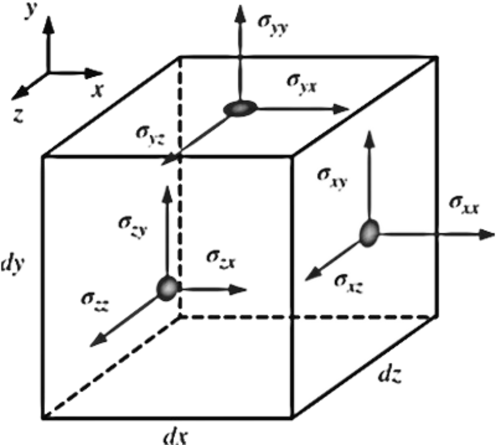

The dot product of a second-order tensor and a vector yields a second vector; this operation is often called the contracted product or the inner product of a tensor and a vector.
In our case, it turns out that the inner product of the stress tensor \(\sigma_{ij}\) and the unit outward normal vector \(\vec{n}\) of a differential surface element yields a vector whose magnitude is the force per unit area acting on the surface element and whose direction is the direction of the surface force itself
Surface force acting on a differential surface element
\(
d\vec{F}_{\text{surface}} = \sigma_{ij} \vec{n} \, dA
\)
Total surface force acting on control surface
\(
\sum \vec{F}_{\text{surface}} = \int_{\text{CS}} \sigma_{ij} \vec{n} \, dA
\)
\(\boxed{\sum \vec{F}_{\text{body}} = \int_{\text{CV}} \rho \vec{g} \, dV = m_{\text{CV}} \vec{g}}\) and \(\boxed{\sum \vec{F}_{\text{surface}} = \int_{\text{CS}} \sigma_{ij} \vec{n} \, dA}\) into \( \boxed{\sum \vec{F} = \sum \vec{F}_{\text{body}} + \sum \vec{F}_{\text{surface}}}\)
\[
\sum \vec{F} = \sum \vec{F}_{\text{body}} + \sum \vec{F}_{\text{surface}} = \int_{\text{CV}} \rho \vec{g} \, dV + \int_{\text{CS}} \sigma_{ij} \vec{n} \, dA
\]
\[
\underbrace{\sum \vec{F}}_{\text{total force}} =
\underbrace{\sum \vec{F}_{\text{gravity}}}_{\text{body force}} +
\underbrace{\sum \vec{F}_{\text{pressure}} + \sum \vec{F}_{\text{viscous}} + \sum \vec{F}_{\text{other}}}_{\text{surface forces}}
\]
◀
▶